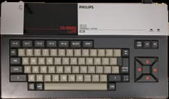
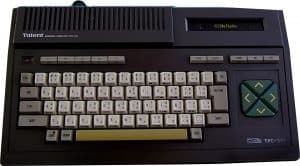
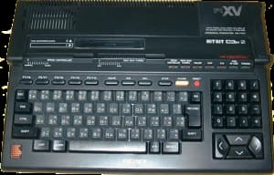
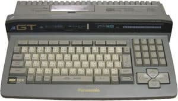

MSX-1
El primer MSX en llegar al público fue el Sony HB-10 en el año 1983,
que en Japón se lanzó en color rojo y en color blanco, pero que se
fabricó en negro para su exportación fuera del país. Los ordenadores
que se fabricaron según la norma MSX inicial, denominados
simplemente MSX, se conocieron posteriormente, al aparecer los MSX,
como MSX de primera generación o bien MSX-1, los cuales fueron
fabricados por Sony, Philips, Panasonic, Canon, Goldstar, Toshiba,
Casio, Spectravideo, Pionner, Sanyo, JVC, Daewo, Mitsubishi,
National, Hitachi, Sharp, Yamaha, Fujitsu, Sharp y Samsung entre
otras. Algunos fabricantes, como fue el caso de Sony o Philips,
llegaron a lanzar una decena de modelos.

MSX-2
El éxito de los MSX2 fue similar al de los MSX de primera
generación, gracias en parte a que los fabricantes no se limitaban a
cumplir con el estándar sino que incluían características
diferenciadas que hacían que cada ordenador se dirigiese a usuarios
con necesidades concretas. Hubo MSX2 básicos, pero también de corte
profesional para la edición de vídeo, configuraciones ideadas para
músicos y para operar como terminales de comunicaciones. A finales
de los 90, con el surgir de las televisiones locales en las
ciudades, era habitual encontrar máquinas MSX2 usadas para
operaciones de titulación de vídeo y generación de efectos gráficos.
No obstante en 1988 cesó su distribución en Europa, quedando el
futuro del estándar prácticamente ceñido a Japón, Corea, algún país
de oriente medio y de hispano- américa.

MSX-2+
En 1988, al tiempo que los MSX1 y MSX2 dejaban de venderse en Europa, en Japón y Corea aparecieron los modelos de la nueva generación: los MSX2+. Únicamente hubo cuatro fabricantes implicados en esta evolución: Panasonic, Sony, Sanyo y Daewo. A pesar de las intenciones iniciales de Philips de fabricar también máquinas MSX2+, finalmente abandonó el proyecto, ya que esta empresa vendía por aquel entonces ordenadores compatibles PC.
ASCII, que era la empresa promotora del estándar, inició a finales de los ochenta el desarrollo de lo que sería el futuro MSX3, planificando su lanzamiento para 1990. En su lugar, todos los fabricantes a excepción de Panasonic abandonaron el desarrollo de MSX, por lo que dicha empresa lanzó los dos últimos modelos bajo la denominación MSX TurboR.

MSX TurboR
El MSX TurboR era un ordenador con unas prestaciones técnicas altas, ya que incorporaba un procesador de 16-bits (compatible con el Z80 de los anteriores MSX). Fue el último de la generación de ordenadores del estándar MSX. Su precio era un inconveniente, ya que por un poco más podían comprarse microordenadores aún más avanzados. Además, este ordenador presentó algunos problemas de compatibilidad con muchos juegos y programas de anteriores MSX y muchos de los periféricos de los antiguos MSX ya no le servían.
Todo esto hizo que, al igual que el MSX2+, sólo se distribuyera en Japón. De hecho, el ordenador solo tiene versión japonesa de la BIOS y su teclado no soporta los conjuntos de caracteres internacionales. En Europa y Brasil se vendieron algunas unidades mediante la importación, aunque a precios muy elevados